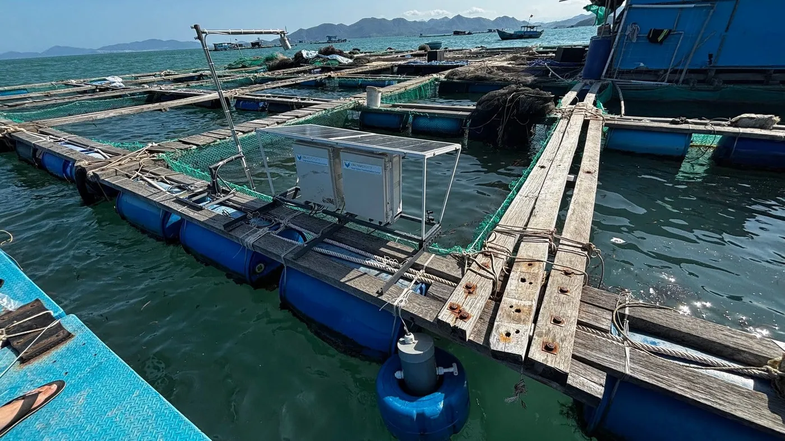

Aaron
AaronSmart marine aquaculture
Automated monitoring stations for cage farming, from lab tanks to Nha Phu Bay
GREEN-X, VinUniversity · Vietnam National University of Agriculture · Research Institutes for Aquaculture I and III · Nha Trang University

A project of GREEN-X, VinUniversity with the Vietnam National University of Agriculture, the Research Institutes for Aquaculture I and III, and Nha Trang University. The team builds automated monitoring stations for fish farming, combining underwater cameras, hydrophones and water-quality sensors, and has moved them from lab tanks to floating cages in Nha Phu Bay. I am responsible for the stations’ network links and monitoring app.
01Context and aim
Offshore cage farming needs continuous monitoring of water quality and fish, yet farmers cannot dive to check every hour. A night-time drop in dissolved oxygen or a long spell of turbid water can harm a whole cage before anyone notices.
The project aims at an automated station placed at the farm itself, logging data day and night and bringing it to operators through an app. The challenge is the environment: turbid water, fouled lenses, salt corrosion, and scarce power and mobile signal.
02People and partners
The project started in February 2025 and is led by Dr. Nguyen Van Dinh, Dr. Do Danh Cuong and Dr. Dinh Van Dung. Pham Minh Hoang leads the engineering, with a team of research assistants on hardware, software and field deployment. Partners:
- GREEN-X (Smart Green Transformation Center), VinUniversity: lead institution, designs and runs the system.
- Vietnam National University of Agriculture, Hanoi: first trials on laboratory tanks.
- Research Institutes for Aquaculture I (Hai Phong) and III (Nha Trang): trials on indoor raceways and outdoor circular tanks.
- Nha Trang University: advice on fish biology and bioacoustics; the offshore station sits on the experimental cage farm of Assoc. Prof. Ngo Van Manh.
- Khanh Hoa Department of Finance: working sessions on deployment in the province.
03What a station does
Each station combines three data sources, each answering one question a farmer has:
- Is the water safe: a sensor cluster continuously measures dissolved oxygen, pH, temperature, salinity and turbidity.
- How are the fish: cameras above and below the surface watch the school and show how fouled the lens has become.
- Are the fish eating: hydrophones record underwater sound, such as feeding, to estimate appetite.
- The offshore station runs on solar power with battery storage and sends data over mobile networks; operators follow everything in one monitoring app (section 05).
04From lab to sea
The system was tested in four settings, each harsher than the last (Figures 1 and 2):
- 05.2025: tank trials at the Vietnam National University of Agriculture, to calibrate sensors under controlled conditions.
- 08.2025: indoor raceways at the Research Institute for Aquaculture I, where humidity and salt spray began to test the hardware.
- 03.2026: station 1 on floating cages in Nha Phu Bay, solar-powered.
- 04–05.2026: station 2 on outdoor circular tanks at the Research Institute for Aquaculture III, adding hydrophones.
- Since then: maintenance trips in June, August and October 2026 (section 06).




05My part: links and the app
Data is only useful if it reaches the people who need it, and that is my part. I set up the virtual private network (VPN) for station 2, maintain the VPN links that let the team reach all three stations (two aquaculture, one reef), and work with Hoang on link failures in the field.
I designed the monitoring app on ThingsBoard. The overview puts the stations on one map with the latest readings, a water-safety index and an alert history (Figure 3, left). Opening a station shows each parameter over 24 hours, 7 days, 30 days or 12 months, both live cameras and the hydrophone spectrum (Figure 3, right). Operators set thresholds per parameter and compare stations (Figure 4); alerts go out on Telegram, and each account sees only its assigned stations.


06Maintenance trips
On the trips of April, June, August and October 2026, the Nha Phu station needed repairs almost every time. The cage area has barely any mobile signal, so the link moved to a 5G SIM; then the router failed. Sensors drifted, a sensor cable snapped, and once the underwater camera lost its mounting screws. On those trips I handled logistics, filmed the site and helped the technical team (Figure 5).


07Results so far
- Two stations running: station 1 on the Nha Phu Bay cages since 03.2026, station 2 at the Research Institute for Aquaculture III since 04–05.2026.
- One monitoring app for all stations, with threshold alerts, comparison and export, and live cameras and hydrophones.
- Hands-on experience of running equipment at sea through repeated repairs, from links to sensors and cameras.
08In the news
GREEN-X has reported on the project’s working sessions: with the Nha Trang Bay Management Board, 22.08.2025 and with Khanh Hoa provincial departments, 16.03.2026. The project page by Pham Minh Hoang has more deployment photos and video: see it here.